2026
¿NADIE quiere FRENAR a la IA? Tonchi Matta EXPLICA la CARRERA entre EEUU y CHINA
Analiza la carrera entre Estados Unidos y China por la superinteligencia.
YouTube · Turno¿APOCALIPSIS de IA? Tonchi Matta EXPLICA los MODELOS de FRONTERA que NADIE puede AUDITAR
Explica por qué los modelos de frontera de OpenAI, Anthropic y Google DeepMind son cajas negras que ni los propios laboratorios pueden auditar.
YouTube · Turno¡Tonchi Matta EXPLICA el APOCALIPSIS de la IA! ¿Vamos a ser COLONIA?
Resumen semanal de Turno Z, con una entrevista a Tonchi Matta, divulgadora chilena en seguridad de inteligencia artificial.
YouTube · Turno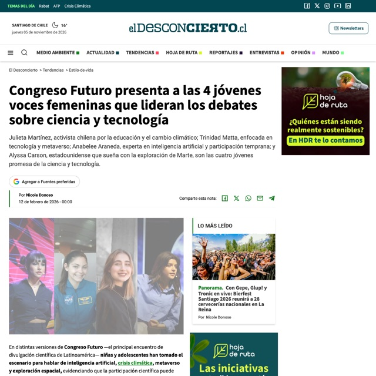
Congreso Futuro presenta a las 4 jóvenes voces femeninas que lideran los debates sobre ciencia y tecnología
Una de las cuatro jóvenes destacadas por Congreso Futuro, junto a Julieta Martínez, Anabelee Araneda y Alyssa Carson.
El Desconcierto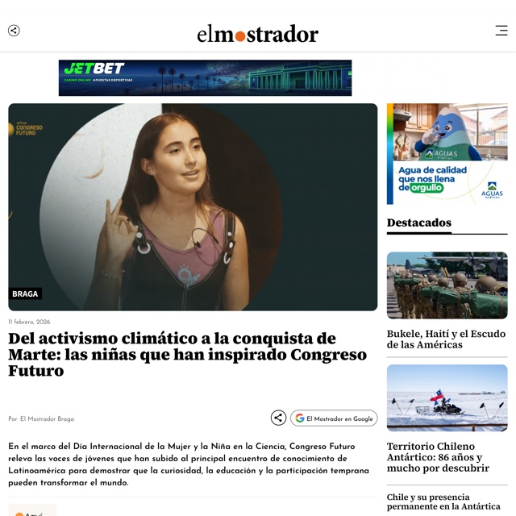
Del activismo climático a la conquista de Marte: las niñas que han inspirado Congreso Futuro
Repaso de las jóvenes que han pasado por Congreso Futuro; incluye su charla «La potencia de las habilidades».
El Mostrador2025
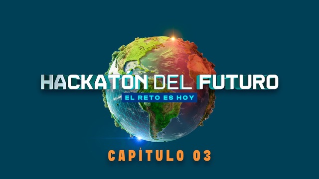
HACKATÓN DEL FUTURO C3: ¿Cómo integrar a las personas mayores en las ciudades del futuro?
Episodio 3 de Hackatón del Futuro: junto a Merwin Méndez, Sofía Lillo y Nicolás Salinas aborda cómo integrar a las personas mayores en las ciudades inteligentes.
YouTube · La Ventana CineHACKATÓN DEL FUTURO C5: La gran final ¿Quién llegará a la Cumbre del Futuro en Nueva York?
Capítulo final de Hackatón del Futuro, con los 16 participantes del programa.
YouTube · La Ventana Cine2024
Este sábado es la gran final de la «Hackatón del futuro, el reto es hoy»
Anuncio de la gran final del programa de TVN; Trinidad Matta y Nicolás Salinas figuran como ganadores de su capítulo.
TVN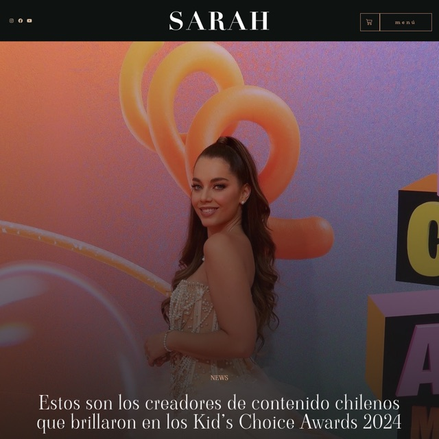
Kids’ Choice Awards México 2024 · «Nuestro Mundo»
Ganadora de la categoría «Nuestro Mundo» como activista y divulgadora científica.
Revista Sarah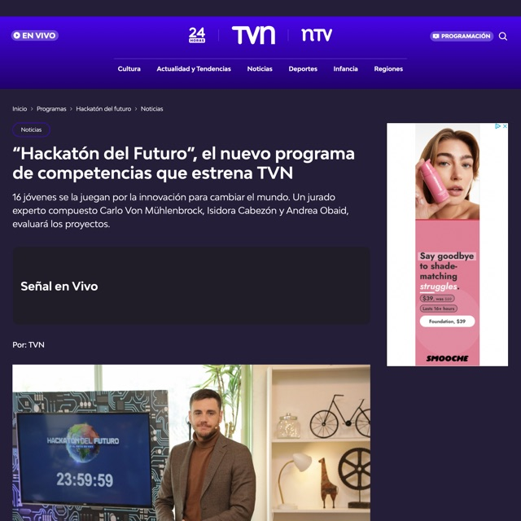
«Hackatón del Futuro», el nuevo programa de competencias que estrena TVN
Participante del programa de competencias de TVN.
TVN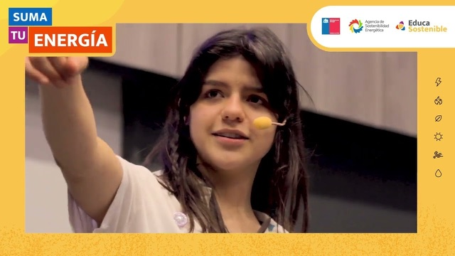
Charla Trinidad Matta, Tremendas
Charla de Trinidad Matta, de Fundación Tremendas.
YouTube · Educa Sostenible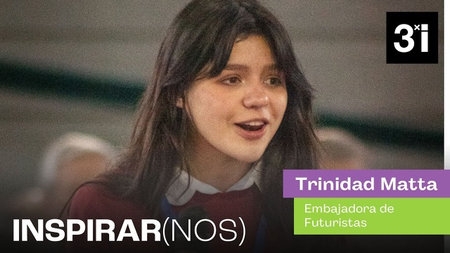
Trinidad Matta · Encuentro Juventudes 2024
Video de Corporación 3xi del Encuentro Juventudes 2024.
YouTube · Corporación 3xiTrinidad Matta, la divulgadora científica más joven en exponer en Congreso Futuro
Edición impresa de Diario Financiero (DF Lab, sección «Pionera»), por Anaís Persson. Pág. 27.
Diario Financiero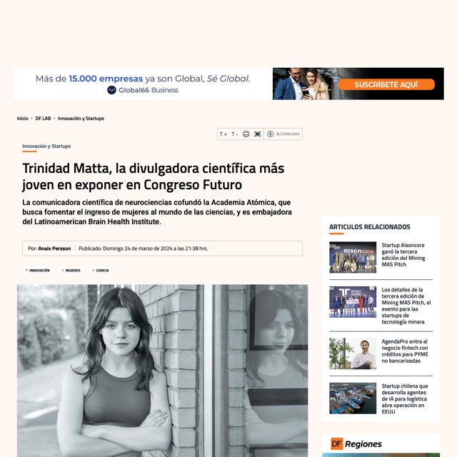
Trinidad Matta, la divulgadora científica más joven en exponer en Congreso Futuro
Perfil de la comunicadora científica en neurociencias que cofundó Academia Atómicas.
Diario Financiero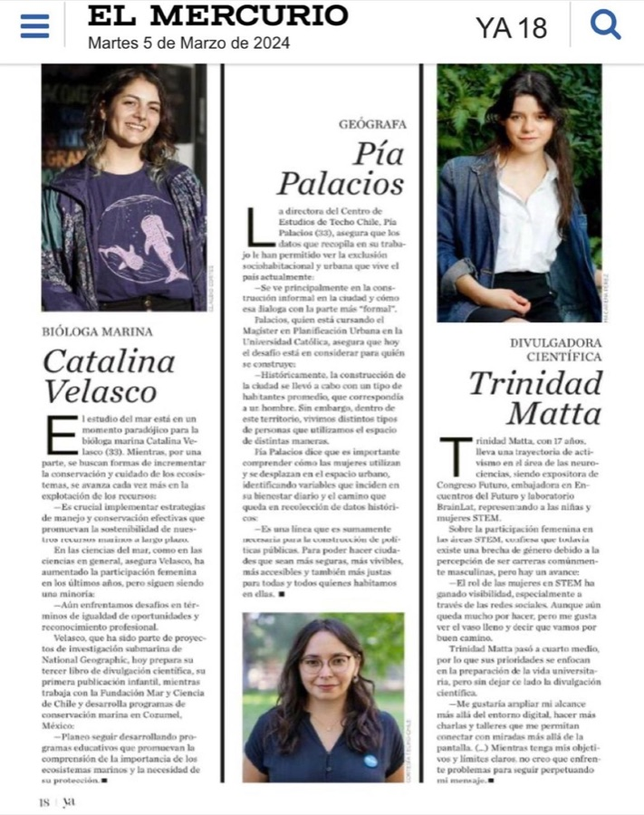
Nuevas líderes: ocho jóvenes que destacan
Especial Día de la Mujer de Revista Ya: perfil de Trinidad Matta, divulgadora científica, pág. 18.
Revista Ya · El Mercurio2023
Somos los Niños: el activismo de Trinidad por la neurociencia
Capítulo sobre su activismo y su trabajo de divulgación de la neurociencia.
TVN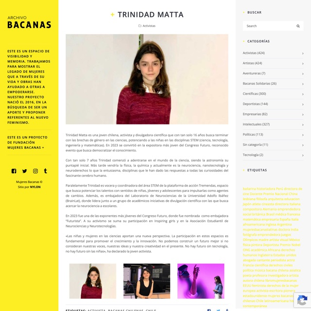
Trinidad Matta
Activista y divulgadora científica que busca terminar con las brechas de género en las ciencias.
Mujeres Bacanas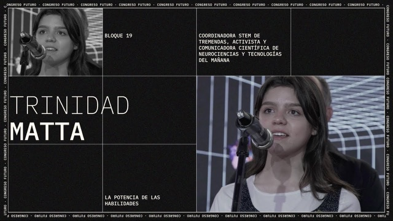
Trinidad Matta | La potencia de las habilidades | Congreso Futuro 2023
Su charla en Congreso Futuro 2023 sobre el metaverso y el rol de las nuevas generaciones.
YouTube · Congreso Futuro«El problema de género afecta a todas las clases y colegios de Chile»
Sub35, por Juan Toro: entrevista a Trinidad Matta (16), alumna del Saint George's College, con 4 certificaciones en neurociencia de Harvard. Pág. 6.
Revista Ya · El Mercurio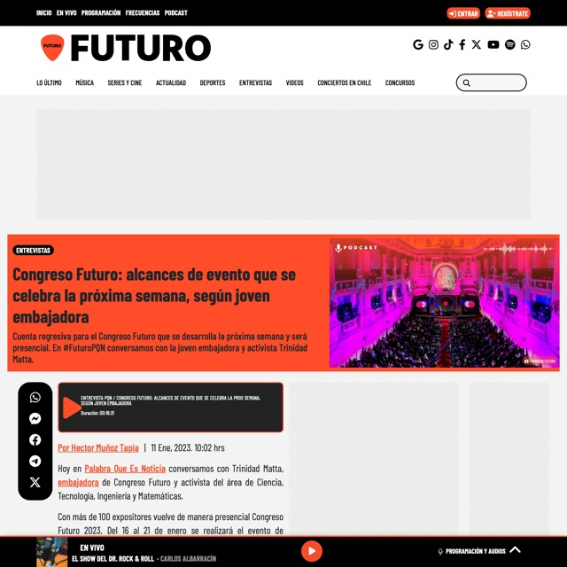
Congreso Futuro: alcances de evento que se celebra la próxima semana, según joven embajadora
Habla sobre los alcances de Congreso Futuro como joven embajadora.
Radio Futuro2022
«No se necesita un doctorado para hablar sobre la ciencia y su importancia»
Entrevista de Valentina Espejo antes del conversatorio de Futuristas en Congreso Futuro. Pág. 10.
Las Últimas Noticias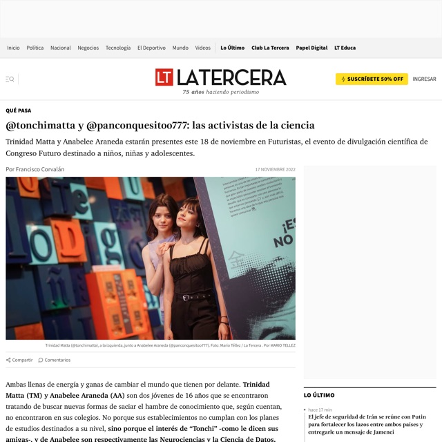
@tonchimatta y @panconquesitoo777: las activistas de la ciencia
Trinidad Matta y Anabelee Araneda, presentes en Futuristas, el evento de divulgación científica de Congreso Futuro.
La Tercera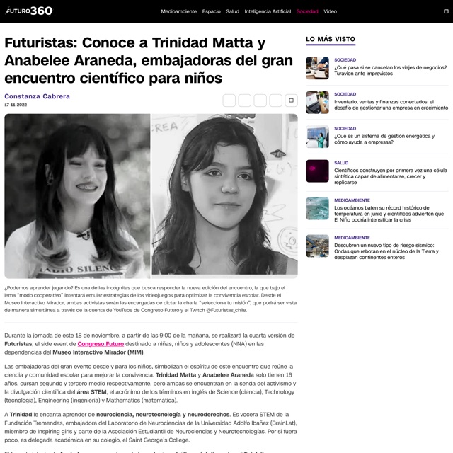
Futuristas: Conoce a Trinidad Matta y Anabelee Araneda, embajadoras del gran encuentro científico para niños
Presentación de las embajadoras de Futuristas, el encuentro científico de Congreso Futuro para niños.
Futuro360 · CNN Chile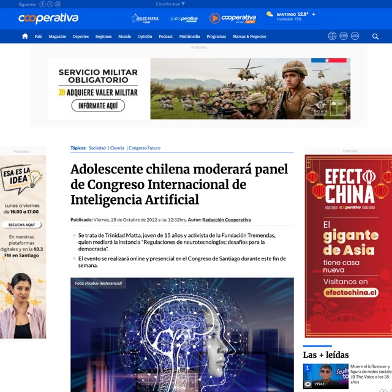
Adolescente chilena moderará panel de Congreso Internacional de Inteligencia Artificial
Moderará un panel del primer Congreso Internacional de IA, Neuroderechos, Plataformas Digitales y Metaverso.
Cooperativa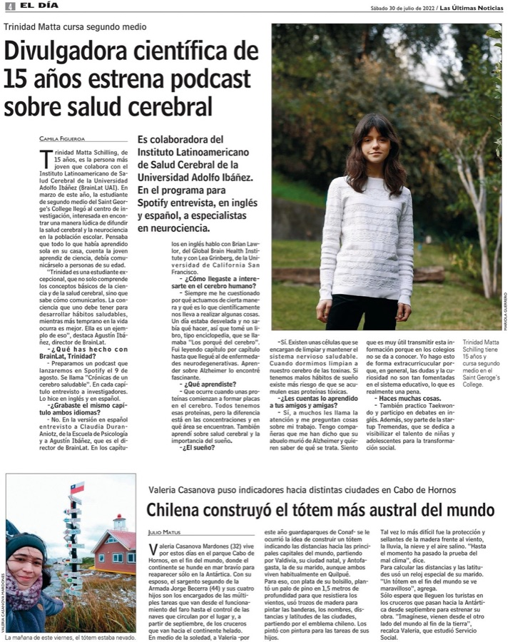
Divulgadora científica de 15 años estrena podcast sobre salud cerebral
Nota sobre su podcast de salud cerebral. Pág. 4.
Las Últimas Noticias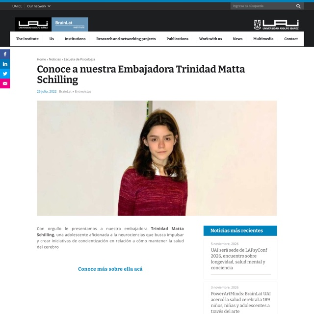
Conoce a nuestra Embajadora Trinidad Matta Schilling
Presentación como embajadora de BrainLat, el instituto latinoamericano de salud cerebral de la UAI.
BrainLat Institute2021
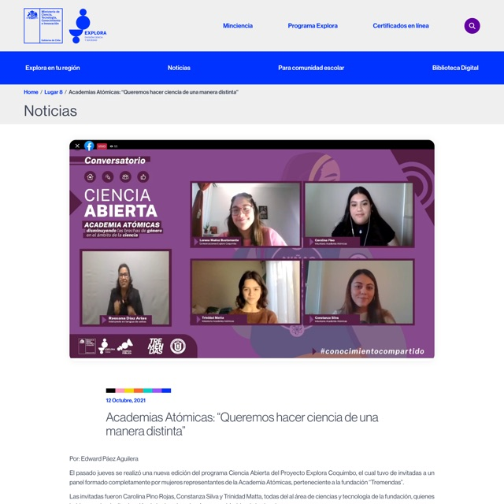
Academias Atómicas: «Queremos hacer ciencia de una manera distinta»
Panel de Academia Atómicas (Tremendas) sobre cómo reducir las brechas de género en la ciencia.
Explora Coquimbos/f
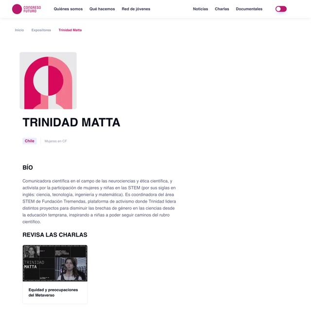
Trinidad Matta · ficha de expositora
Ficha de expositora en Congreso Futuro.
Congreso Futuro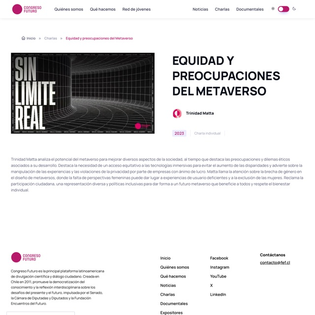
Equidad y preocupaciones del Metaverso
Charla en Congreso Futuro (ed. 2023).
Congreso FuturoTrinidad Matta, joven divulgadora científica
Especial Futuro 2030 de La Tercera.
La Tercera